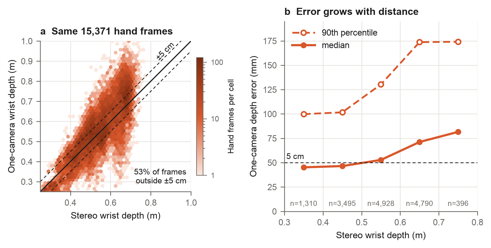
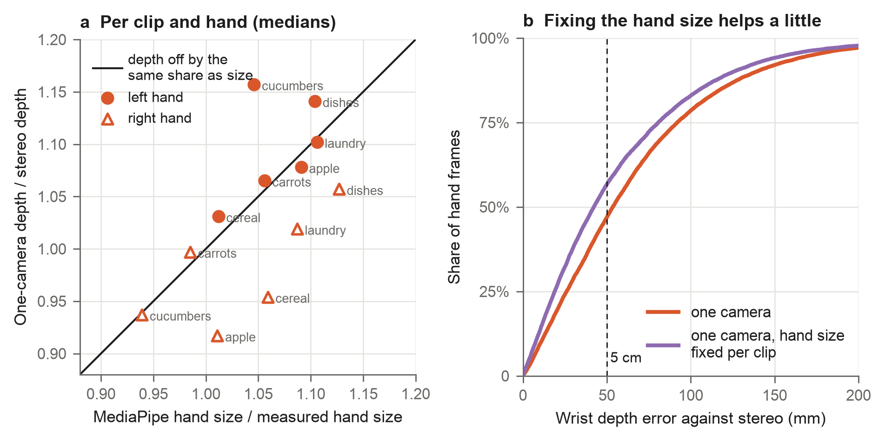
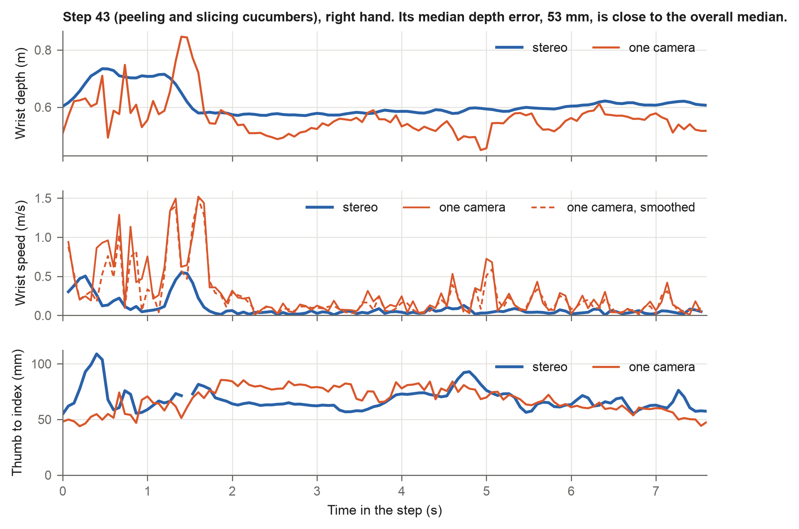

The problem
Most first-person hand data is filmed with one camera. One image shows where the hand is across the frame. It does not show how far away it is. Monocular methods estimate that distance from how large the hand looks, using a hand shape that a model predicts for the frame.
For robot learning, that depth goes straight into the action: wrist position, wrist velocity and grip opening. On real head-mounted footage, how far is the one-camera wrist from a measured one?
Setup
The footage is the public Humanola egocentric sample, filmed with a head-mounted stereo pair. We use 12 minutes of it: six household and kitchen clips, 106 steps. We had already published stereo hands for these frames in stereo-hands-sample.
- One camera. MediaPipe finds the hands in the left view only. Our open-source pipeline, ego2lerobot, moves MediaPipe's metric hand shape until it projects onto its own keypoints. It uses the same intrinsics and lens distortion as the stereo labels.
- Reference. Stereo joints, only where they were triangulated in that frame.
- Same frames, no alignment. Each stereo hand is paired with the one-camera hand at the same place in the left image (median keypoint distance 1.93 pixels). Both are in the left camera frame, so nothing is rescaled or shifted. 15,371 of 16,423 stereo hand frames are compared.
Results
The one-camera wrist is off in depth by 53.5 mm at the median and 138.7 mm at the 90th percentile. The wrists are 0.548 m from the camera at the median, so that is about 10.3% of the distance. Across the image the wrists agree better: 20.5 mm at the median. Most of the error is in depth.
It grows with distance: 45.2 mm at the median for wrists 0.3 to 0.4 m away, 71.2 mm at 0.6 to 0.7 m. Per clip, the median runs from 37.8 mm (cutting an apple, hands nearest the camera) to 66.4 mm (peeling and slicing cucumbers).

Hand size explains only part of it. MediaPipe does not know the wearer. Its palm measures 80.8 mm at the median and varies from 69.6 to 90.4 mm between frames. The stereo palms measure 77.6 mm. A hand that is 10% too large is placed 10% too far. Yet rescaling each clip's hands by one measured size only brings the median error to 42.2 mm. Most of the rest is tilt. Rotated onto the stereo hand, MediaPipe's shape agrees to 14.3 mm per joint, but the rotation needed is 29.9 degrees at the median.

Robot actions.
| Wrist motion | One camera | Stereo |
|---|---|---|
| Speed of the hand, median | 0.093 m/s | |
| Velocity error against stereo, median | 0.215 m/s | |
| Direction off by over 30 degrees, hand faster than 0.1 m/s | 64.2% | |
| Frame to frame acceleration, median, unsmoothed | 7.67 m/s² | 2.27 m/s² |
The velocity error is larger than the typical speed of the hand. Smoothing over 0.33 s only brings it to 0.179 m/s.
The grip holds up better. The thumb to index distance is 9.7 mm from stereo at the median, with no bias. Grasp and release events disagree, though: 301 on the stereo hands, 192 on the one-camera hands, 64 matching within 0.33 s. We cannot say which is right. Fingertips are often hidden from one camera, and unsmoothed stereo grip is the noisier signal.

Is the stereo reference right? It is a measurement, not ground truth. Humanola publishes its own 3D hand tracking for these frames. Against it, the one-camera wrist depth differs by 46.0 mm at the median and our stereo wrist depth by 21.1 mm. Part of our calibration was measured from the footage itself.
If you buy hand data
- Ask whether depth was measured or estimated. From one camera, our median error was 53.5 mm for hands about half a metre away, and more further out.
- Expect wrist velocities to carry that error. Smoothing does not remove most of it.
- Ask for a per-frame flag that says which values were measured and which were filled.
- Check grasp events on their own. Here the two methods agreed on few of them.
One camera does give a hand where stereo gives none, for example when only one camera sees it. Those frames are not in these numbers.
Limits
Twelve minutes, six clips, one camera rig, one monocular method (ego2lerobot's, built on MediaPipe). Other single-view models may do better or worse. Our per-frame stereo joints can test them on the same frames.
Reproduce it
The per-frame hands, the results and the scripts are in arete-robotics/mono-vs-stereo-hands. One command downloads the public inputs and rebuilds every number and figure:
pip install "ego2lerobot @ git+https://github.com/arete-robotics/ego2lerobot" matplotlib huggingface_hub
bash bench/run.shTo run the same comparison on your own footage, write to hello@arete-robotics.com.